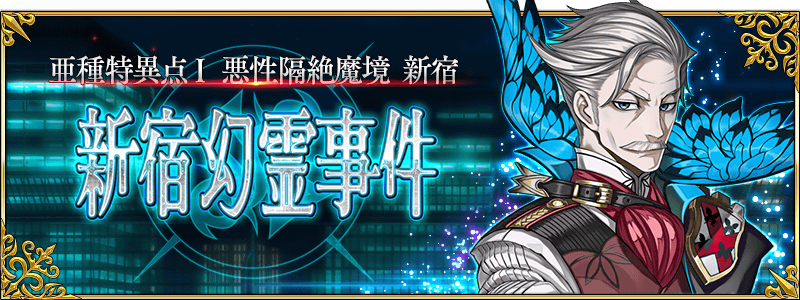
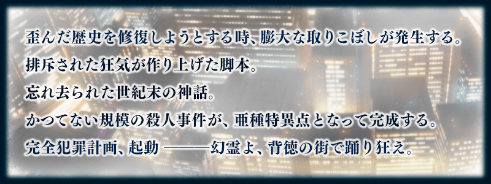

◆公開時間◆
2017年2月24日(五) 18:0020:30～
◆亞種特異點Ⅰ，開幕◆
「亞種特異點Ⅰ 惡性隔絕魔境 新宿 新宿幻靈事件」的舞台為與外界隔絕的監獄街區。
與新登場的Servant們展開緊張刺激的戰鬥。
◆開放條件◆
通過「終局特異點 冠位時間神殿 所羅門」後開放。
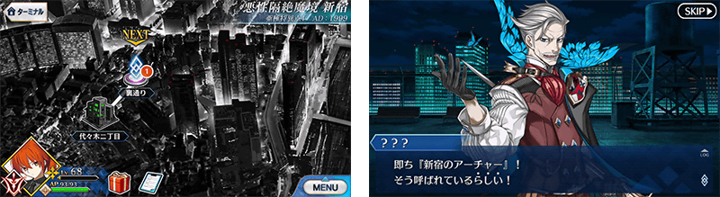
在Fate/Grand Order官方網站內首頁及Gallery，公開亞種特異點Ⅰ的TVCM。
敬請確認。
配合亞種特異點Ⅰ公開，開放Master等級的上限。
透過這次的開放，最高等級從130變更至140。
◆開放日◆
2017年2月24日(五) 18:0020:30～
一部份Servant的戰鬥動作及寶具演出翻新！
◆對象Servant◆
阿爾托莉亞・潘德拉剛〔Alter〕(Saber)
◆翻新時間◆
2017年2月24日(五) 18:0020:30～
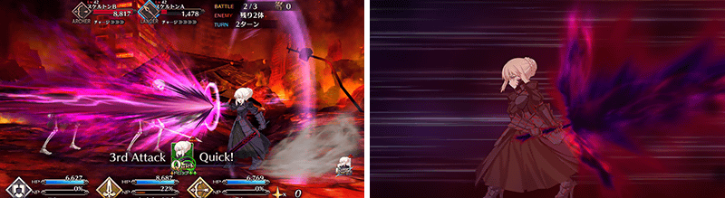
※開發中畫面。
自亞種特異點Ⅰ，追加新道具1種類！
為新登場Servant的技能強化及靈基再臨必要的道具。
主要可以從亞種特異點Ⅰ主線關卡的敵人做為戰利品來獲得。
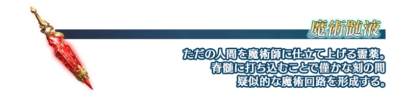
亞種特異點Ⅰ以後、藉著故事進行來真名判明的複數Servant登場。
真名判明前的Servant，在靈基一覧畫面和編成畫面等各種畫面中以隱藏真名狀態顯示。
另外，一部份Servant的寶具名也同様地，直到真名判明前會是隱藏正式名稱狀態。
還有，關於召喚時的演出和戰鬥時的語音等，在真名的判明前與判明後播放會有所差異。
各自的演出和語音，真名判明後可以在圖鑑(マテリアル)和Servant詳細畫面的語音清單中確認。
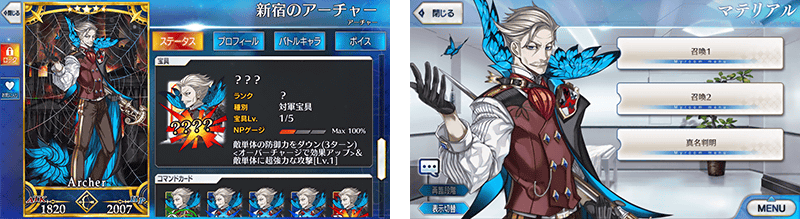
在亞種特異點Ⅰ的關卡，對身為故事主題持有〔惡〕屬性的Servant，賦予在關卡中自身的絆點數獲得量提升效果。
將對象Servant編入隊伍，解開在新宿發生的事件謎團吧！
- 對象Servant
-
職階 稀有度 Servant Saber ★★★★ 阿爾托莉亞・潘德拉剛〔Alter〕 Archer ★★★★★ 新宿的Archer Archer ★★★★ 阿塔蘭塔 Lancer ★★★★ 伊莉莎白・巴托里 Lancer ★★★★ 李書文 Lancer ★★★★ 清姬 Rider ★★★★★ 弗朗西斯・德雷克 Rider ★★★★★ 女王梅芙 Rider ★★★★ 安妮・伯妮＆瑪莉・瑞德 Rider ★★ 愛德華・蒂奇 Caster ★★★★★ 玉藻前 Caster ★★★★ 伊莉莎白・巴托里〔萬聖節〕 Caster ★★★ 美狄亞 Caster ★★★ 吉爾・德・雷 Caster ★★★ 梅菲斯托費勒斯 Assassin ★★★★★ 開膛手傑克 Assassin ★★★★★ 酒呑童子 Assassin ★★★★★ “山之翁” Assassin ★★★★ 卡米拉 Assassin ★★★★ Emiya〔Assassin〕 Assassin ★★★★ 新宿的Assassin Assassin ★★★ 百貌的哈桑 Assassin ★★★ 風魔小太郎 Assassin ★★★ 靜謐的哈桑 Assassin ★★ 咒腕的哈桑 Assassin ★★ 夏爾＝亨利・桑松 Assassin ★★ 歌劇魅影 Assassin ★ 佐佐木小次郎 Berserker ★★★★★ 弗拉德三世 Berserker ★★★★★ 庫・夫林〔Alter〕 Berserker ★★★★★ 謎之女主角X〔Alter〕 Berserker ★★★★ 茨木童子 Berserker ★★★ 清姬 Berserker ★★★ 呂布奉先 Berserker ★★ 卡利古拉 Berserker ★ 阿斯忒里歐 Avenger ★★★★★ 巖窟王 Avenger ★★★★★ 貞德〔Alter〕 Avenger ★★★★ 戈爾貢 Avenger ★★★★ 新宿的Avenger
※2月24日(五)時間點
亞種特異點Ⅰ以後，會出現持有特殊HP量條的強力敵人。
這種敵人，必須減少複數次量條才能擊倒！
※透過一次的攻擊，超過HP量條的傷害不反映在下個HP量條。
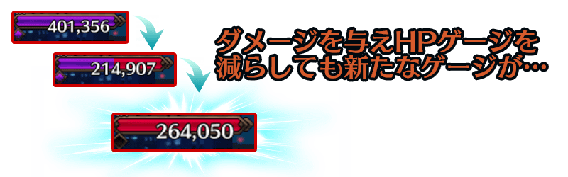
※2/24(五)追記
在MyRoom中，追加新功能「播放器(サウンドプレイヤー)」。
在播放器除了冒險部份和戰鬥中所使用的樂曲外，也可以播放在期間限定活動使用的樂曲。
樂曲的開放，道具的消費是必要的。
另外，一部份的樂曲會有主線關卡的進行和特定活動的參加、一部份Servant的所持等，必須滿足個自開放條件的情況。
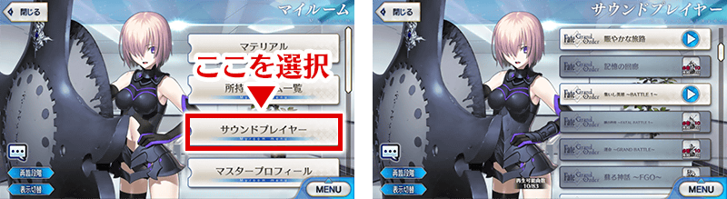
實施做為亞種特異點Ⅰ的開放條件直到終局特異點為止的主線關卡AP消費1/2宣傳活動。
無論如何藉此機會推進主線關卡吧！
◆舉辦期間◆
2017年2月24日(五) 18:0020:30～3月8日(三) 13:59
◆對象關卡◆
直到終局特異點為止的全部主線關卡
※自由關卡、強化關卡、幕間的物語為對象外。
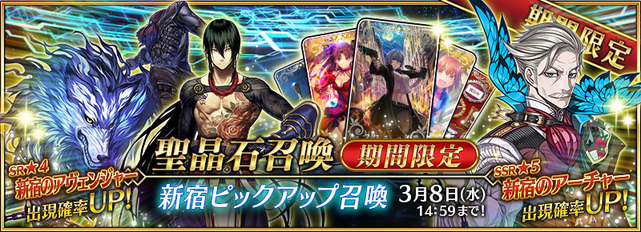
◆「新宿Pick Up召喚」期間◆
期間：2017年2月24日(五) 18:0020:30～3月8日(三) 13:59
為了紀念亞種特異點Ⅰ開幕，以期間限定舉辦「新宿Pick Up召喚」！
※未到達亞種特異點Ⅰ的狀態也能進行新宿Pick Up召喚。
在「亞種特異點Ⅰ 惡性隔絕魔境 新宿 新宿幻靈事件」活躍的Servant「★5(SSR)新宿的Archer」以期間限定登場！
另外新Servant「★4(SR)新宿的Assassin」「★4(SR)新宿的Avenger」新登場！
另外，新規概念禮裝「★3(R)フリーランサー」也新登場！
Pick Up期間中，期間限定Servant、新登場Servant的出現機率提升！
詳情請在聖晶石召喚畫面左下的召喚詳細確認。
※新宿的Archer在Pick Up期間結束後不會追加到故事召喚。
※新登場Servant及新登場概念禮裝在Pick Up期間結束後會追加到故事召喚。
※關於真名尚未判明的Servant，透過主線關卡的進行會讓Servant及一部份寶具的名稱變化。
10次召喚中確定1張★4(SR)以上和確定1位★3(R)以上的Servant！
※確定★4(SR)以上包含Servant和概念禮裝。
※所謂「出現機率提升」意指比同稀有度的Servant出現機率更高的設定。
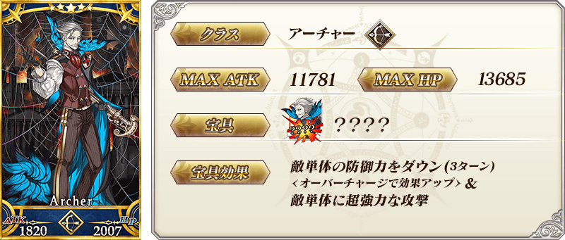


| 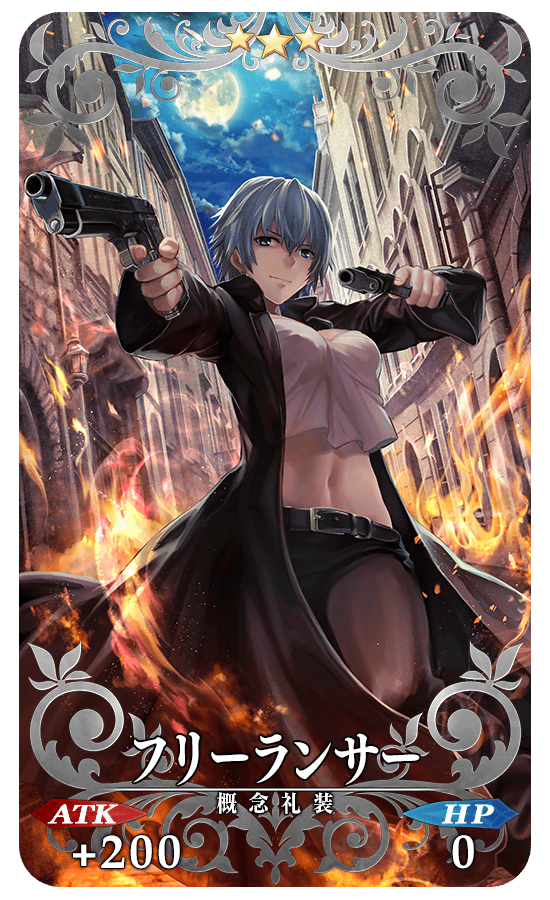 |
★★★R フリーランサー ATK 200(最大：1000) HP 0 技能 自身的Quick卡Critical威力提升25% |
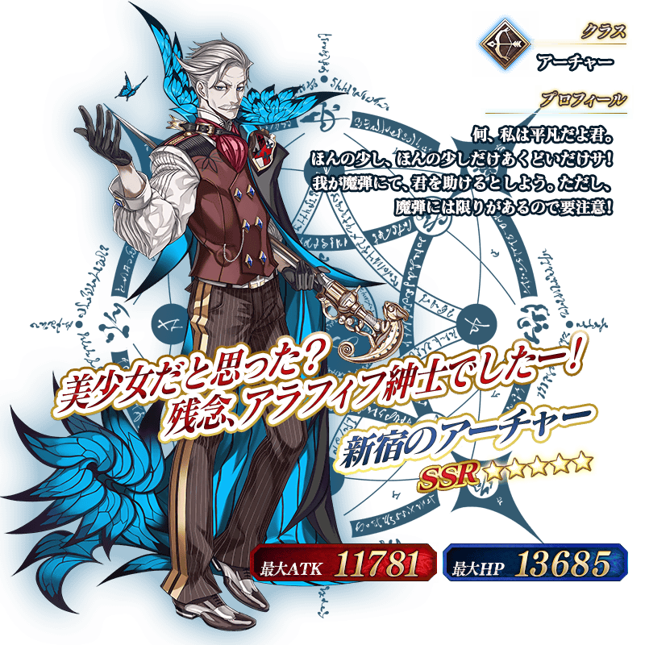
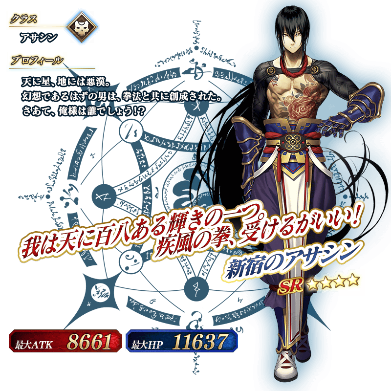
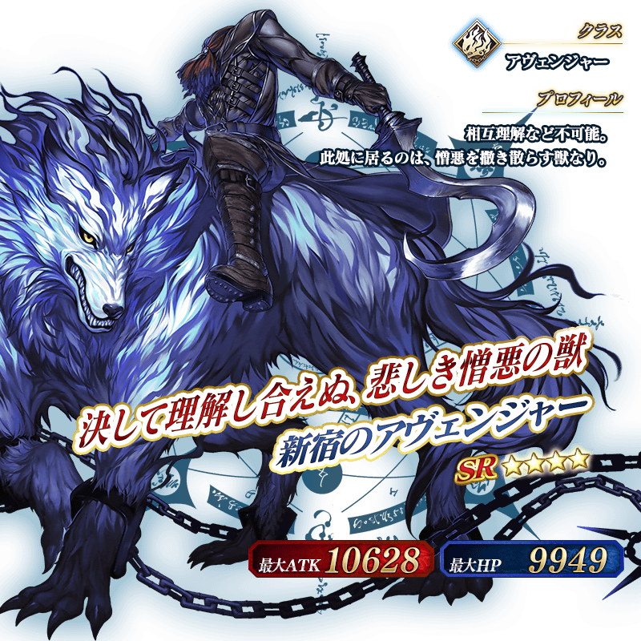